Protecting AI systems from data poisoning
The television coverage aired three times during the day and highlighted a blockchain-based safety net for AI systems.
Press & Public Engagement
Selected broadcast, national press, federal, technology, and university coverage of research in trustworthy AI, cybersecurity, transportation, and resilient infrastructure.
The television coverage aired three times during the day and highlighted a blockchain-based safety net for AI systems.
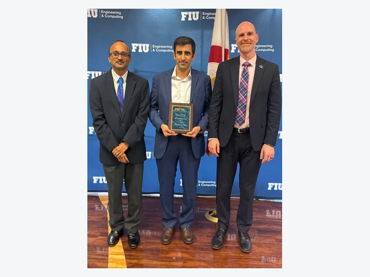
Faculty Research Excellence Award CeremonyFIU College of Engineering & Computing · 2026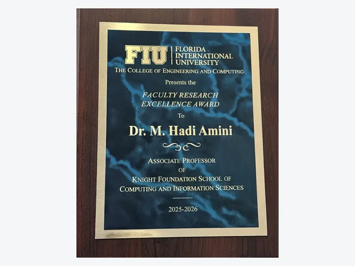
Faculty Research Excellence AwardFIU College of Engineering & Computing · 2025–2026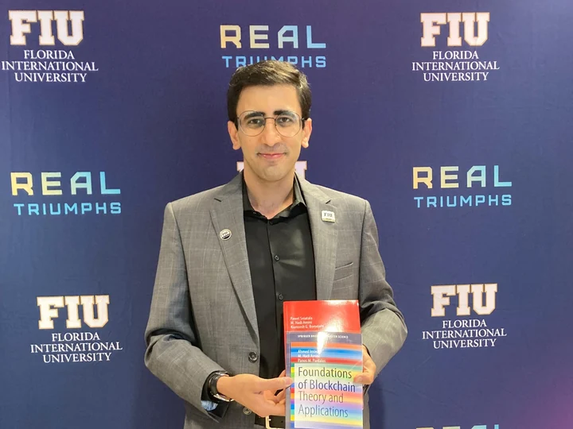
FIU Book Author CeremonyFlorida International University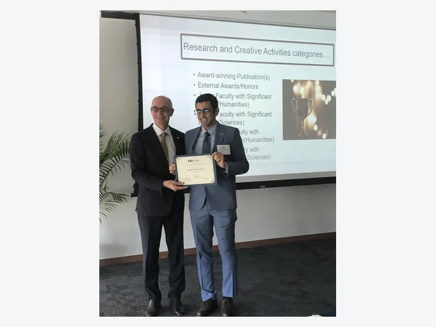
FIU Top Scholar Award PresentationResearch and Creative Activities (Sciences) · 2024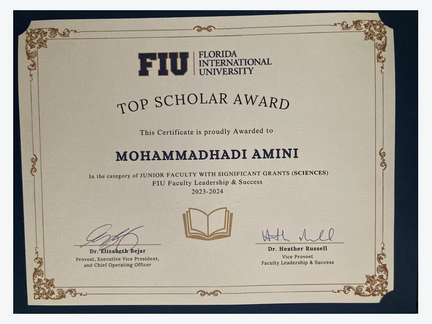
FIU Top Scholar Award CertificateResearch and Creative Activities (Sciences) · 2024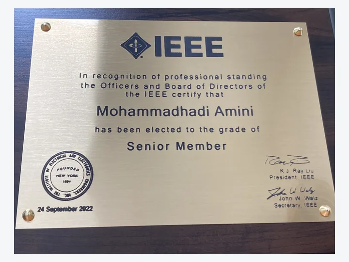
IEEE Senior Member RecognitionInstitute of Electrical and Electronics Engineers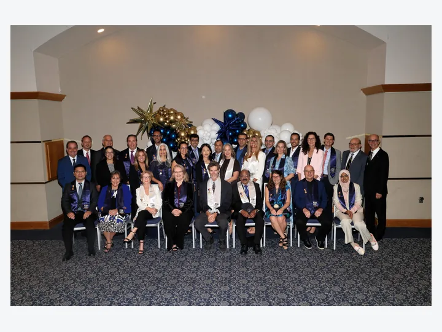
FIU ConvocationCollege of Engineering & Computing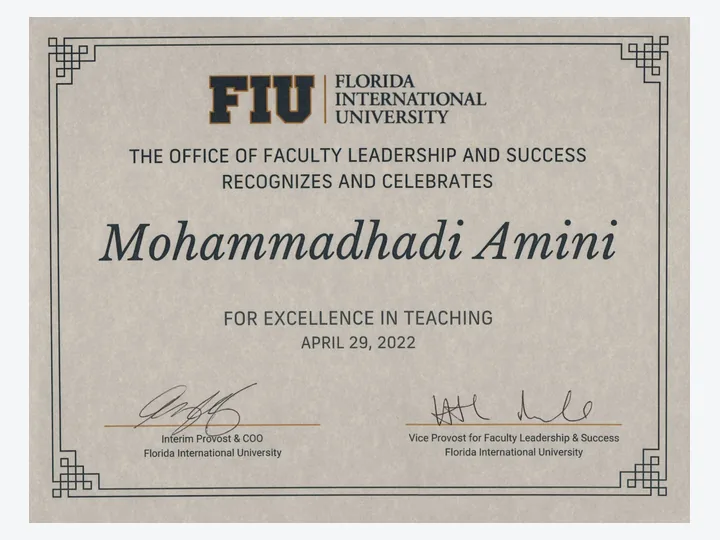
Rewarding Excellence in Teaching Incentives AwardFlorida International University · 2022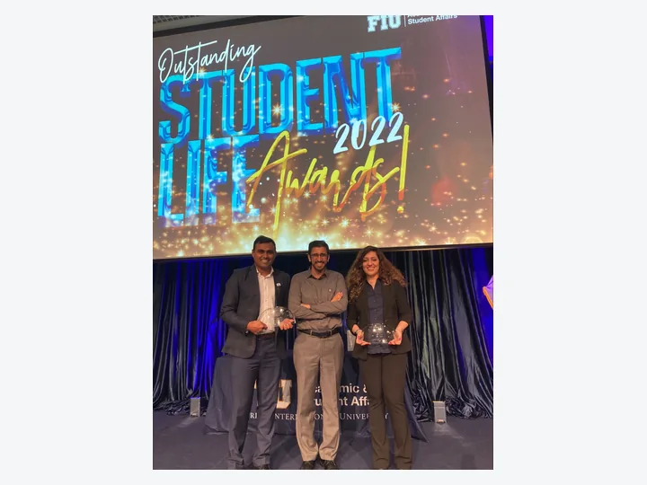
FIU Student Life Awards GroupAward recipients and mentors · 2022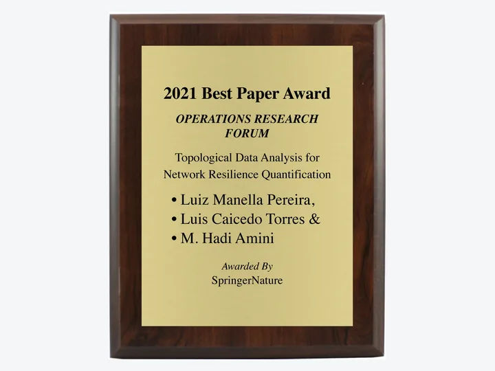
Best Journal Paper AwardSpringer Nature Operations Research Forum · 2021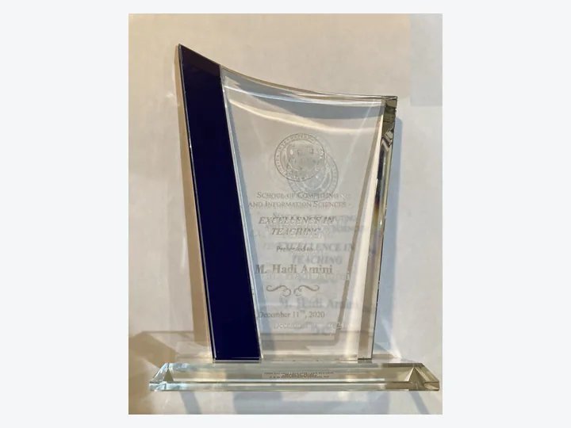
Excellence in Teaching AwardFIU School of Computing · 2020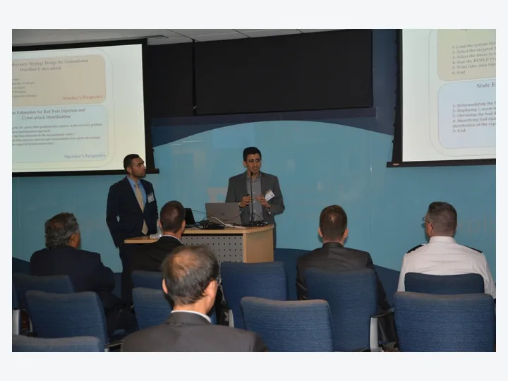
Artificial Intelligence and Information Assurance WorkshopFlorida International University · 2019{kind=link}
{kind=link}
{kind=link}
{kind=link}
{kind=link}
{kind=link}
{kind=link}
{kind=link}
{kind=link}
{kind=link}
{kind=link}
{kind=link}